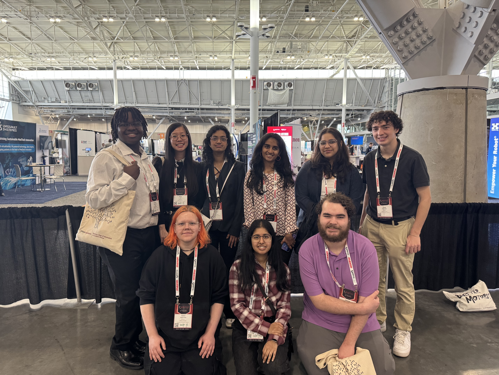
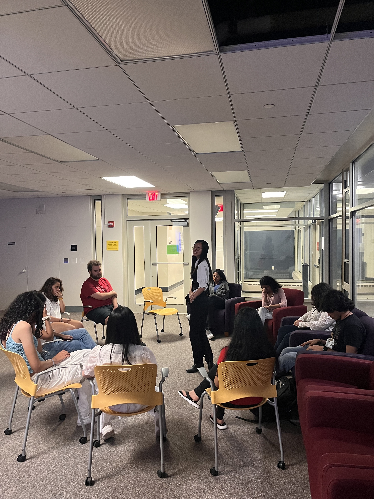
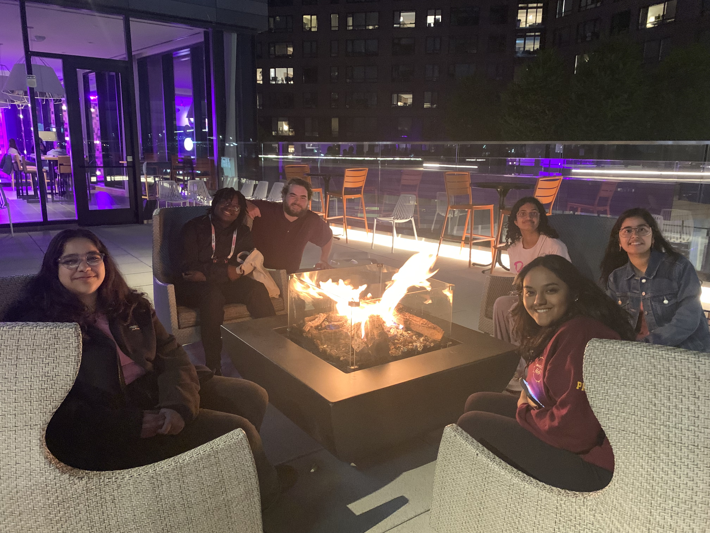
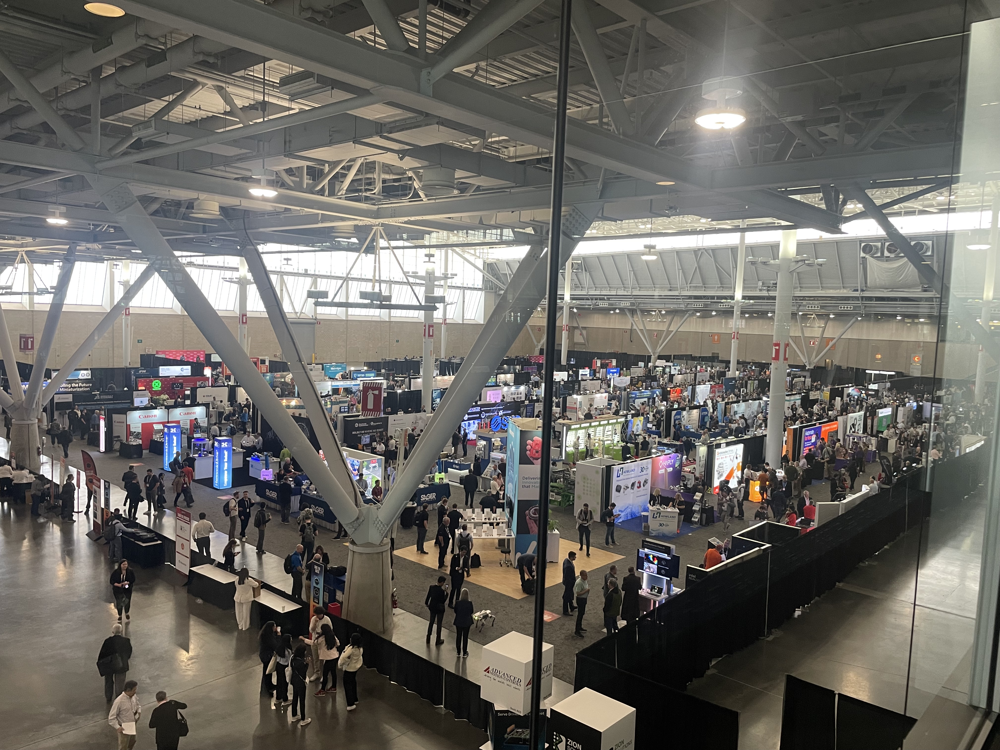
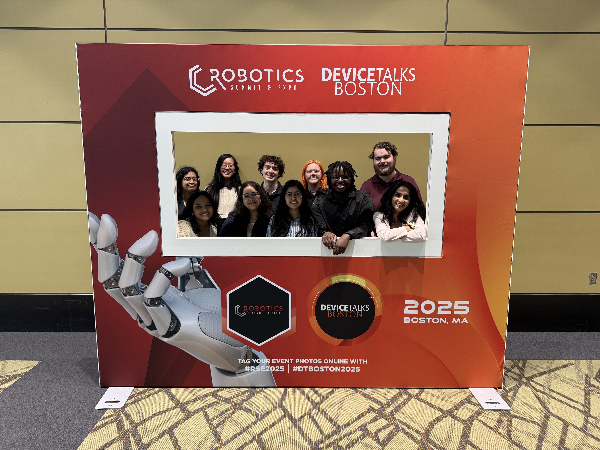
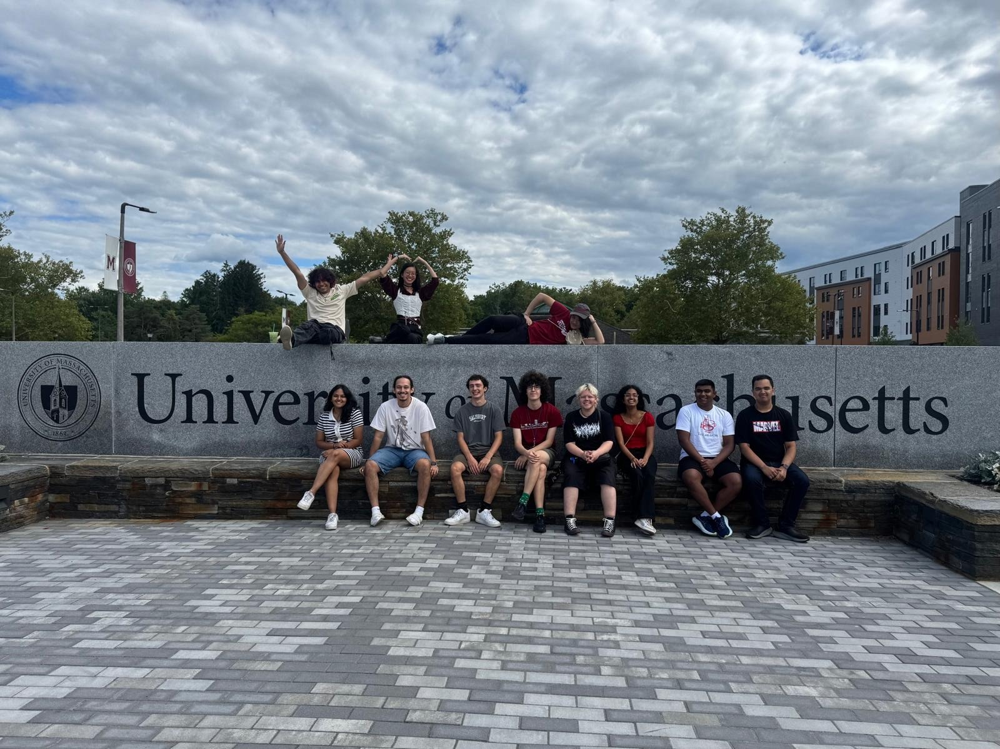

Explore Events
From technical workshops to Boston conference trips to low-key game nights — here's how FIERCE fills your first year with experiences worth having.

Three Pillars of FIERCE Programming
Everything we do fits into one of three goals: build your skills, deepen your community, and show you what's out there.
-
Workshops & Learning
Hands-on sessions covering practical computing skills — from debugging strategies to building your first web app. Led by mentors who've been in your exact seat.
-
Community & Social
Game nights, floor hangouts, group meals, and unplanned moments that turn hallmates into lifelong friends. The best FIERCE memories happen between the scheduled stuff.
-
Industry & Exploration
Field trips to Boston tech companies, guest speakers, and conference experiences that expand your sense of what computing can look like as a career.
Event Spotlight
A look at some of our recent events — the kind of things you'll be part of when you join FIERCE.
-

Game Night — Mafia
A relaxed community night where FIERCE students play Mafia, laugh too loud, and discover who among them is secretly untrustworthy. The floor bonding starts here.
-
2025 Robotics Summit — Boston
FIERCE students traveled to Boston to attend the Robotics Summit conference, connecting with industry professionals and exploring the cutting edge of tech.
-

After the Conference
After a long day of panels and exhibits, the FIERCE crew explored the city together. These are the moments that stick with you long after the event ends.
More Photos from the Community



Want to Be FIERCE?
These events are waiting for you. Fill out the interest form and we'll be in touch before fall semester.
Fill Out the Interest Form